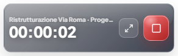

Sempre sincronizzato
Progetti, attività e timer restano allineati con l’app web. Se interrompi il timer da un dispositivo, lo stato si aggiorna anche sugli altri.
Timer desktop per Windows
Seleziona progetto e attività. Arch Time Mini Timer mantiene il lavoro sincronizzato con lo studio e salva le ore direttamente in Arch Time Pro.

Progetti, attività e timer restano allineati con l’app web. Se interrompi il timer da un dispositivo, lo stato si aggiorna anche sugli altri.
Riduci la finestra a un contatore discreto nell’angolo dello schermo, con progetto, attività e tempo sempre visibili.
Se il timer resta acceso troppo a lungo, Arch Time Pro invia lo stesso promemoria previsto per il timer web.
Modalità compatta
Il mini timer resta in basso a destra e torna alla finestra completa quando interrompi la registrazione. Nessuna scheda del browser da cercare.

Pronto in pochi passaggi
Scarica Arch Time Mini Timer dalla pagina ufficiale del Microsoft Store.
Usa le stesse credenziali del tuo account Arch Time Pro.
Scegli progetto e attività, poi avvia il timer senza aprire l’app web.
Pubblicazione in corso
La pagina sarà collegata al Microsoft Store appena la revisione del pacchetto sarà completata.